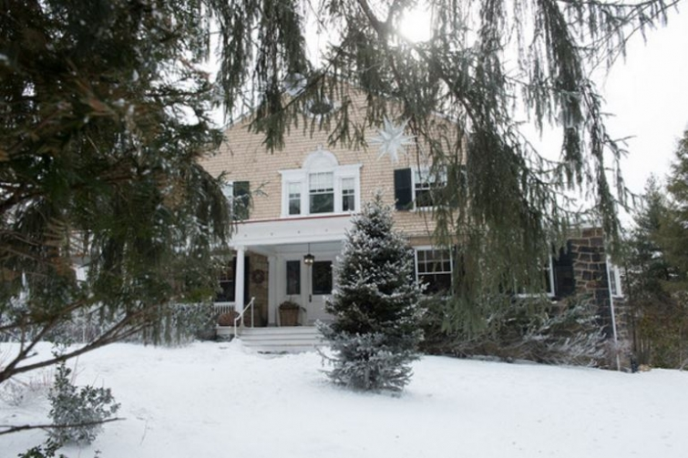
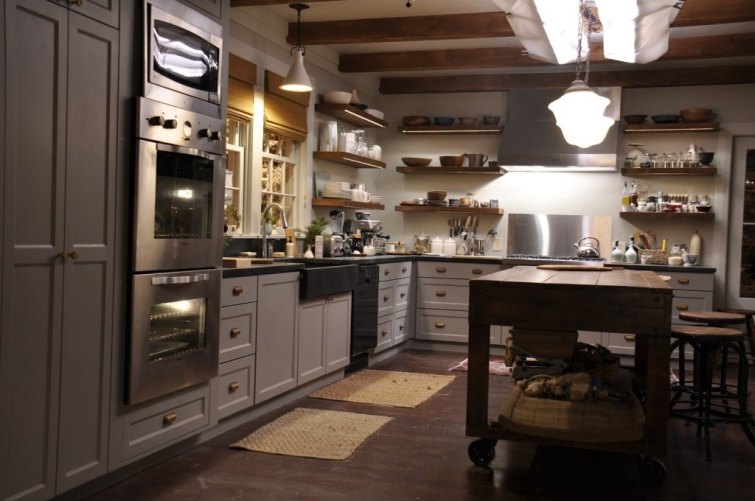

.png)
.PNG)
.PNG)
.PNG)
.PNG)
.PNG)
.JPG)
.JPG)
.PNG)
.PNG)


source
Hallelujah I have caught up on all the blog correspondence! ¬†(And that was a MAJOR accomplishment friends!) ¬†So now let’s get back to the fun of blogging. üôÇ What shall we talk about today? ¬†How about a house in a movie we went to see during the Christmas holidays?

Did you see Love the Coopers? ¬†My daughter and I both enjoyed it, but my husband did not really like the first half. (He came around by the end though.) Of course with it being a Beth Rubino designed set, I knew my heart would beat for the interiors. (She’s the designer behind the wonderful sets of Something’s Gotta Give and It’s Complicated.) ¬†The movie house interiors and exterior were sets, but the exterior was constructed as a replica of an actual home in Pittsburgh. ¬†There are two good articles to read about the house and sets¬†here¬†and here, and there is even a video about the set design here.
And now we move from the movies to television.  Are you watching the final season of Downton Abbey?  I did not watch any of Season 5, but I am hooked on the show once again after watching the first episode of Season 6, and of course, I tuned in again for the 2nd episode.  If you are watching, do you have any predictions for the season? (I love the story of Mrs. Hughes and Carson!)
Have you also watched A Chef’s Life on PBS? ¬†It is the story of chef Vivian Howard and her husband, Ben Knight. ¬†They have moved from New York City to a small town in North Carolina and are running a farm to table restaurant serving their take on Southern cuisine. ¬†You follow them through their family life and all the happenings at the restaurant. I have enjoyed watching it for a few seasons.
There was an article in Garden and Gun about their home.
And do you remember my post on Mast Farm Inn¬†in Valle Crucis, North Carolina? ¬†Well the inn has teamed up with another restaurant in the area, Over Yonder, and the people at A Chef’s Life¬†for an amazing give-away that I just know you are going to want to enter. ¬†Click here for all the info. üôÇ
While we are on the subject of a chef and food, here is a recipe I want to try this winter:
Your own personal chicken pot pie! üôÇ
(Doesn’t it just look perfect for a cold winter’s night?)
(But I would leave out the carrots and the corn. üôÅ )
Have you ever made donuts from scratch?
Don’t¬†these¬†sound delicious?

And don’t you think they would be perfect served at this ice skating party?
If we had ice to skate on around here, I could wear my new scarf I bought this week. ¬†(I bought it in red, of course. üôÇ ) Talbots is having a great sale right now!
Have you made any resolutions for the new year? ¬†My goals for the year are to get to bed earlier, to organize our pantry and cleaning closets, and to master decorated sugar cookies. üôÇ ¬†If you are into getting organized in 2016, you might want to begin by throwing out things you don’t need or use. ¬†I thought this list was very helpful.
And here are some helpful hints for organizing all your many photographs.
(I really liked the calendar checklist.)
And one final thing to talk about today. ¬†If you are a lover of letters like I am, then you probably follow Lindsay of Lindsay Letters. ¬†Well did you know she just opened her own store (a real brick and mortar one!) in the town of Sun Prarie, Wisconsin?! ¬†If you are close to her shop, I hope you will let us know all about it in the comments. ¬†I would love to be able to visit it! üôÇ
And that is all there is to talk about today. ¬†I hope you have had a great weekend, and I will be back with you this week for more houses, travel, and entertaining ideas. üôÇ
Until next time…


.PNG)
Thank you for turning me on to , A Chef’s Life,! I’ve been binge watching and enjoing every episode! A great recommendation!
Thanks for sharing the info about the sets of the Diane Keaton movie. Now I will have to see it!
Glad to see you are all caught up with the blog again after the holidays….As always, a big fan of the site. Keep up the creative work!
All the best to you and your family!
——————————————————————–
Thanks so much for stopping by Stephen! I am sure you would enjoy the sets from the Diane Keaton movie, and I remembered that you are a big fan of hers. Yes, I’m caught up from Christmas but moving on towards other projects. üôÇ I hope you and your family are doing well in this cold!
Kelly
Great post Kelly…I live about 2 hours from Vivian Howard’s restaurant…and what a great giveaway….love the Talbots collection…I have some gift cards burning a hole in my wallet…so need to get to that sale right away!….Have a great weekend!
——————————————————————–
Thank you Shirley! I think it would be fun to dine at Vivian’s restaurant, and I hope you get to check it out one day.
If you have Talbots’ gift cards, you really should use them during their big big sale! Their sale prices are amazing.
Thanks for stopping by!
Kelly
I gave all my cousins and girlfriends Lindsay Letters Christmas prints this year. (And I bought myself the Santa needs coffee mug) Her work is so beautiful. It was easy to find something to go with each individual personality and decorating taste!
————————————————————————
Yes, she does do gorgeous work! I think that is a great idea for all the Christmas gifts (and the gift for yourself. üôÇ )
Kelly
The Barefoot Contessa has a great chicken pot pie recipe. I bake it in soup bowls and use puff pastry for the topper.
Smitten Kitchen streamlined the recipe to make it even better and a little quicker.
The filling freezes really well so you could have two tonight and two in a week or two when you don’t feel like cooking.
http://smittenkitchen.com/blog/2014/10/better-chicken-pot-pies/
———————————————————————–
Thank you SO much for this link Christi! I would love to be able to freeze it and have it later. Definitely doing this!
Kelly
Hi Kelly! Such great ideas! The family memories organizing has totally catched my eyes! Not into Downtown Abbey right now but your post make me think about it üòâ Have a nice day!
Claire
————————————————————————-
Thank you Claire. I hope you get into Downton soon. It is such a good program!
Kelly
This is certainly a great post, Kelly! I really wanted to see Love the Coopers over the holidays, but it was one of those things that there seemed never to be enough time for. I have to see it though; love that kitchen! I, like many others, have loved and been hooked on Downton Abbey. My sister has seen the last season in its entirety. I told her, no spoilers, but just tell me if it will be worth watching. Her answer was, “Without a doubt!” So you can bet I am sitting on the edge of my seat. I also love A Chef’s Life. I live in eastern NC only 30 minutes from The Chef and Farmer Restaurant. The first time I ate there was for my anniversary. When we pulled up, I thought, this is it? But when we stepped inside I felt like I was in a very chic New York restaurant. The food was delicious. The atmosphere was great, and the service was impeccable. I have never heard anything negative from any of my friends who have been. I enjoy watching the show because it reminds me of how all my relatives cooked while I was growing up and still do today. Yes, we like our greens the way you cook them too.üòâ Thanks for sharing the info about the giveaway. Wouldn’t that be nice! Sorry for the long response, but I just had to tell you about The Chef and The Farmer. Again, this was such an enjoyable post!
Sherry
———————————————————————
Well I am glad that your sister thinks the DA season is without a doubt one to watch! Do not apologize about your long response. I LOVE that you have been to Vivian Howard’s restaurant! How fun!
Kelly
Such a great post Kelly. Like a mini magazine! Film and tv reviews, great interiors, recipes and even fashion! You’ve excelled yourself :). It really did brighten my day. I read it first with my morning coffee … I love it when there’s a new one so I can do that! Then in more detail later, looking at the links and thinking about the recipe … I ll definitely make the chicken pot pie, it looks delicious. I’ve not seen the film but will look out for it and strangely I don’t watch Downton Abbey, not sure why really as it’s the sort of drama I’d usually enjoy. I’m sure I will one day! Like others here, I think the kitchen in Love The Coopers is lovely! üôÇ I’ve got some open shelving and have considered re painting in shades of grey so this has given me some great ideas. Thanks for the checklist of things to throw away. I’m just starting a major de clutter and I’m determined to be ruthless ( ha ha!! ) this time. Actually throwing lots away rather than just re organising cupboards etc.
I’ve realised the only way to minimise the time I spend doing housework is to minimise my possessions !
So here’s to a more organised and clutter free 2016!
Have a great week Kelly,
Rosemary
———————————————————————
Great Rosemary! I’m delighted you appreciated the variety of topics in the post. üôÇ And I am surprised you do not watch Downton! You need to get right on that. LOL You are so right about cutting back possessions being the way to go with cutting back on the housework. Amen to the organized and clutter free 2016!
Hope your week is going well too.
Kelly
Happy New Year! Love this post! Oh my yes, sometimes I like a movie house better than I like the movie. I wanted to see The Coopers but never got around to it. I will wait for it to come out in Redbox. Love love Vivian Howard! I loved the show where she spent hours picking squash blossoms and then stuffing them. I was so relieved at the end of the show where she decided it was just too much trouble… Bahaha! My brother tried to make reservations at her restaurant but the wait was 6 weeks out. I Can’t Wait To See your sugar cookies!! Kathy is right… Cynthia makes works of art out of sugar cookies. So funny Kathy and DiAnne talked about their kitchen aid mixers! Three times over Christmas I dropped hints that I wanted one but it really wasn’t in any of my elves’ budgets. I always drool at the red one in the William Sonoma store. ( I think lucky Kathy has the red one)
————————————————————————-
Happy New Year to you too Katrina! Isn’t A Chef’s Life entertaining?! Did you see the one where she and her mother were preparing greens (ramps, I think?) Her mother cooked them like I do…for hours. Vivian wanted them still bright green and only cooked them for a short while. She had some very important chef coming to the restaurant and wanted to impress him with them. I guess because he had never had them before, he liked them! (I still think cooking them longer is better. üôÇ )
You need a Kitchen aid mixer. They are a workhorse. We were given an ivory one when we got married. Then they came out with a red one years later, and I received it as a gift, so I gave my ivory one to my mother. They are super heavy but work wonderfully!
Hope you are having a good week!
Kelly
What a great post! You really packed a lot into this one! I love houses in movies too. I am not so sure about those open shelves instead of cabinets though. I love the school house lighting and the trim and hardware on those cabinets.
I can’t wait to see the cookies you make. As DiAnne said (above)you need that awesome mixer. When Cynthia and I made cookies for the out-of-town guest bags for my daughter’s wedding, we had two of those mixers going at once. Cynthia is the Cookie Queen. I am going to send you a photo of the cookies she made for my big birthday…unbelievable! And, they were as delicious as they were pretty.
I wish I could make myself get rid of the things on the throw-away list. I did get rid of magazines but I didn’t feel that much better. LOL! Josie says she will help me when she retires…which is very, very soon!
I am looking forward to your next post!
————————————————————————
I’m so glad you liked the post. It took us to a lot of different places, didn’t it?! I am wanting a school house pendant light in our laundry closet…maybe a 2016 project. üôÇ
I doubt I will be very good with the cookies, but I am sure going to try. Your friend Cynthia is definitely the Cookie Queen! And yes, I do have a Kitchen aid mixer. Mine is red. (Of course! üôÇ )
Good luck to Josie on her retirement and to you on getting rid of things!
Kelly
Oh, if only I could win the give-away at the Bed and Breakfast! My husband and I are so enchanted with the place! If I can’t win, I hope one of your readers do win, and will let us know all about their visit!
What an interesting blog you wrote today! It is refreshing to put 2015 behind and begin again for 2016.
——————————————————————–
Oh wouldn’t that be great if you won! It is a beautiful area of the country. I don’t know if they would be serving them when the winner is there, but the roasted fingerling potatoes they served at the Mast Farm restaurant for breakfast were the best I have ever had. yummmmmm.
Thank you for reading Vicki, and I hope you are having a good week.
Kelly
So many great links! Want to spend more time checking them out. I am trying more new recipes this year and try to master homemade rolls and cream pies. Love the winter picnic idea and table setting. We are finally getting the Big Chill down here in FL. Quite a shocker! Just wish I could watch snowflakes and winter birds feeding. Thank you all the great ideas!:)
———————————————————————–
I hope you will explore all the links Louvina. Homemade rolls would be a challenge to me…I usually don’t have the patience needed to wait on the dough to rise! Yes, we are having the cold now, finally. I would have loved this during Christmas instead of the 80 degree stuff we had then. My fingers are crossed for snow this year. Perhaps with the increased likelihood of precipitation and colder temps they are predicting, we will be more likely to get it.
Hope your week is going well! üôÇ
Kelly
Kelly,
I adore this post for a number of reasons. I have been known to fall in love with a movie just because the house and location are sooo beautiful. I bought a Kitchenade mixer just so I could learn to make pretty sugar cookies like friends Kathy R and Cyntihia M. Well, I should tell the real reason I bought the mixer. I went to a bridal shower where the twenty something bride to be received a brand new mixer. I thought, why is it I have lived all these years and don’t own one of those mixers. I bought one. Life is too short not to own a pretty mixer.
I love Downton Abbey and I will be sorry to see it end. I will have to check out The Chef’s Table..
Did you see the clipboard calendars on the Target dollar isle? So cute but I bet with your lettering skills you could do a super cute one.
I like your list of things to toss.
One of the things on my New Year’s list is always to drink more water.
Happy New Year, Kelly!
DiAnne
————————————————————————–
I love your story of your mixer! You are so right about life being too short to wait on the good things!
I have not seen those calendars, but I will look for them the next time I am in there (like possibly today. LOL)
Great goal of drinking more water. I need to do the very same thing DiAnne.
Happy New Year to you!
Kelly
Kelly,
We missed last season’s Downton as well but are watching this season. I predict that Anna will get pregnant finally and she and Bates can have the family and future they have been working towards.
My goal for 2016 is to make 50 new recipes. I made 49 new recipes in 2015 (peppermint cheesecake dip was one of the last 3 recipes I made). Thanks for sharing your goals.
Dawn
——————————————————————-
You really think happiness will find its way to Anna and Bates? I don’t know if the writers will ever let them be happy. üôÅ But we will see. I would love it if they do! üôÇ
You did great to do 49 new recipes last year! I think I will take notes from you and keep a count of what I do too. 50 would be like 1 new one per week.
Thanks for reading and commenting Dawn!
Kelly
I’m addicted to Downton Abbey – but only started watching it recently!! I’m finishing up the end of Season 3 right now and I’ll catch up with you before the grand finale!!!
——————————————————————-
It would be good to go back through all the seasons. It is very addicting, isn’t it?! So glad you are enjoying it. I will warn you that Season 4 is rather depressing. (That is why I skipped Season 5, although I have heard it is much better than 4.)
Kelly
Interesting links today Kelly! üôÇ I have made individual chicken pot pie from my Southern Living recipe I have used for years. I can’t imagine why you’re hatin’ on carrots though. üòâ I’ve never made donuts, but would love to try though. The ice skating party looks so fun! Well, fun to watch not actually skate. Our little northern section of our driveway was a bit of a black ice skating rink this morning! üòõ I love to make decorated sugar cookies! It will be easy for you to master. I even made them as favors for our daughter’s wedding. Please share. üôÇ I also love to organize!! My house is pretty organized, but I definitely have trouble areas. I’ve already made a list to work on too. My pantry is one on the list. I plan to paint the inside too. So much to do!! üòÄ But I am thankful for much to do!
———————————————————————–
I have never liked the taste of cooked carrots…raw is fine…just not cooked. üôÅ
Black ice is BAD and scary. Be careful!
I am not sure the cookies will be that easy for me. The consistency of the icing is hard to master I think.
Painting (and organizing) our pantry is on my list too. I am thankful to be healthy and energized enough to tackle the to-do list items!
Thank you for reading and taking the time to comment Gina. üôÇ
Kelly
Hi, I love the movie and especially the house from somethings gotta give. Havnt seen the others you mentioned. Will have to look them up. I am a fan of Downton Abby. Will looking forward to more decorating ideas! üôÇ
———————————————————————–
That house in Something’s Gotta Give is quite droolworthy! It has this one beat by a long shot, but this one is still pretty.
I hope Downton ends with a happily-ever-after for everyone there since this is the final season.
Kelly
I’m a faithful Downton Abbey watcher…so sad that it’s ending. But, I’ve never seen seasons 1-3….so I plan on catching up later! I am slowly organizing…your list is helpful! I think sometimes we just need a guide…a place to start, so thanks for that! üòâ
————————————————————————-
I am sad about it ending too, but I can’t believe you haven’t seen seasons 1-3. Girl you need to watch those. (They were the best seasons to me!)
I agree about just needing a place to start. A list is a good way to keep the amount of work from overwhelming you.
Hope you are having a good week Donnamae!
Kelly
I have so enjoyed your blog and astonishing talent for some time now. This is my first time in posting. My husband and I are living in the DFW area since 2013. Our
home is Jacksonville, FL. We left behind six grandchildren. Sometimes I miss them so much I can hardly stand it. I FaceTime with my 7 year old granddaughter
as often as I can. Your blog has been such a comfort to me and I wanted to thank you for taking the time and effort to bring so much joy into so many lives. I love your decorating. May you be richly blessed!
———————————————————————
Gosh what a super sweet comment! Thank you so very much Carole. I am happy that you have found comfort in the posts here.
I know what you mean about missing the children – your grandchildren, our children. And we use Skype as often as we can to keep in touch.
I am so glad you jumped in the comments. Thank you for taking the time to read the posts and leave your words here. I appreciate it! üôÇ
Kelly
Love all of it. I am in the process of organizing my whole house. Thanks for the cleaning and organizing hints–and I think I need a new vest and sweater too. Lol
xo, Lissy
———————————————————————–
What an undertaking Lissy! The whole house…wow! I am sure a new vest and sweater would make your work go faster. LOL
Hope you are having a good week and getting a lot done!
Kelly
Hi Kelly,
I saw the movie and it did redeem itself in the end, but other than the house and the decor, I wouldn’t see it again. Too bad because I was hoping with Diane Keaton in it it would be a favorite.
I had good luck at the Talbot’s sale too…the markdowns were great.
I wish I was going to that ice skating party…what a wonderful table set up.
Love Downton Abbey, I’ll miss it when it’s gone.
xo,
Karen
————————————————————————-
I did not especially like Diane Keaton’s role nor the silliness in the movie, but I did like the army guy in it. üôÇ (and the house and scenery of course.)
I just ordered more from Talbots online yesterday. (Our closest store is about 40 minutes away.) Those sales beat Target prices on some of their things! Glad you had good luck as well.
We will have to have some kind of “Downton Fix” party when the season is over. A spin off movie would be great!
Kelly
Oh Kelly, that kitchen from the movie would be my dream kitchen. ( I did not see the movie but my daughter did and she was rather like your husband. I think it was not what she was expecting.) In fact, I do plan to have shelves in my little GA farm house vs upper cabinets. We finally got the environmental approval so hopefully things will move along now. And my husband and I enjoy A Chef’s Life. Her accent is very similar to mine so I like that appalachian twang.:) I am trying to avoid donuts but those sure look good. In fact, I am off to the mall to walk on this very cold Alabama morning.
———————————————————————-
Hi Arlene! Something about that kitchen also reminded me of the one in It’s Complicated for some reason…not sure what exactly. Congrats on moving ahead with your farmhouse! I have been contemplating shelves here in just a small section of our kitchen, but I doubt we will tackle that one. (Why mess with something that is fine when there are MANY other areas that need work? Right?) You have much more determination than I do if you can lay off donuts. Good for you!
Kelly
Happy New Year!
Would appear you are re-charged and full of inspiration for your followers. I am at the head of the line following you.
I wanted to see “Coopers”, now it is a gotta view. Also thanks for a life chef. Love the ≈ïed in Talbot’s items. It seems vest are all the go this season.
Keep the posts coming!
————————————————————————-
Happy New Year to you too Nan! The 550+ emails in my inbox were certainly weighing heavy on me, but yes, I am recharged and ready to get back into it here now. üôÇ I liked one of the romances in Love the Coopers, but my husband did not care for all the negativity in it. It is not one of Diane Keaton’s bests by far…but the house and all the snow and Christmas scenes were beautiful to me. And yes, vests are big, but I saw swimsuits in Target last week. Swimsuits. It is just a tad too early to be thinking of those; don’t you think? üôÇ
Kelly
Kelly, I agree 100% with the 11 things to throw away and I have four on the list accomplished so far. I won’t share any spoilers, but through another blogger, I have watched the entire sixth season and Christmas show of Downtown Abbey and I believe it to be the best of all. I made Italian wedding soup yesterday for my grandson who turned eleven. It’s his favorite. And I am definitely trying the chicken pot pie recipe (carrots included) for our dinner this week. We are finally see winter with snowfalls once again here in Ohio.
——————————————————————–
You are ahead of me if you already have 4 of those things taken care of! I am so glad to hear that you think Downton’s final season is the best. I had stopped watching it with all the depressing parts with Anna in Season 4, but Season 6 has pulled me in again. Your soup sounds delicious, and what a great thing to make for your grandson! I would love to see some snow here, but I know those of you in the North tire of it rather quickly. (We have heard predictions of it for the 19th here, but I seriously doubt that will happen. Fingers crossed!)
Kelly
Kelly, I love the kitchen from Love the Coopers! Now I need to see the movie!just finished watching Downton Abbey and A Chef’s Life. The latter show was new to me…I enjoyed it. So many fun links in your post and helpful organization tips! I need to get busy doing some of those this month. The old magazines and catalogs have got to go! Thanks for the inspiration! Warmly, Gracia
———————————————————————-
Thanks for checking out all the links Gracia! I know what you mean about getting rid of the old magazines and catalogs. There are waaaaay too many Christmas catalogs still stashed around here. Good luck with your organization!
Kelly